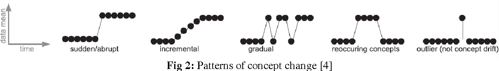
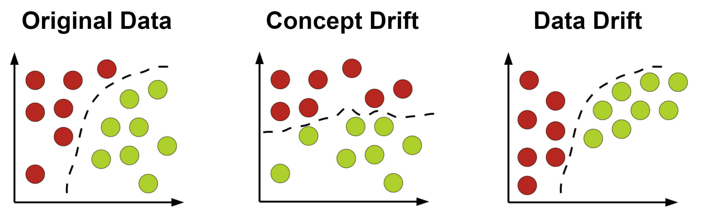
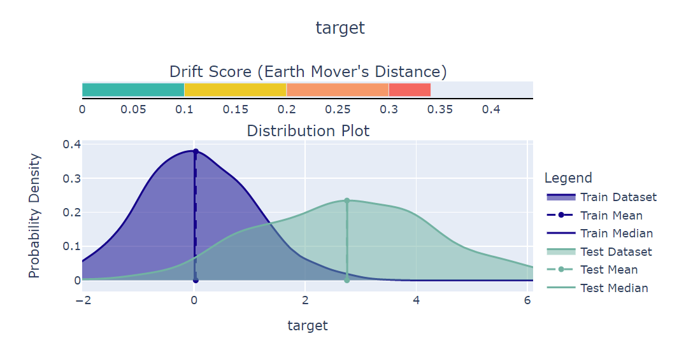

Drift User Guide#
This guide will help you understand what drift is and how you can detect in using deepchecks.
Structure:
What Is Distribution Drift?#
Distribution drift is a change in the distribution of the data, the label or the relationship between them. Drift happens over time, and can occur either gradually or suddenly.
Common reasons for drift can be natural changes in the data, such as shopping habits changing for an online retailer (for example, during the covid pandemic, online shopping rose significantly and buyer patterns changed), or data acquisition and processing issues, such as camera settings changing accidentally to have lower exposure.
So Why Is Drift So Important?#
Machine learning models are meant to predict on unseen data, based on previous known data. If the data or the relationships between features and the target label have changed, our model’s performance may degrade.
Detecting drift is an important warning sign that our model may be not as accurate on newer data (compared to the training data), and that it should be adjusted or retrained on different data. In production environments, detecting drift (and other measures derived from drift, such as model confidence) is often the only way to know that our model performance is deteriorating, as in many cases the label is unknown for some time after the prediction is made.
It is important to note that not all changes in data represent drift. For example, periodic changes in data due to daily, weekly or seasonal changes are usually not considered drift, as they are often present in the training data.
Different change patterns in data. Source.
Which Types of Drift Are There?#
In machine learning, we usually refer to 2 types of drift:
Data Drift#
Data drift is any change in the distribution of the data.
For example, in a dataset predicting a person’s income, the target (income) is highly correlated with high level of education (advanced academic degrees). A government plan to help people of lower social-economic status to get higher education, would create a data drift that changes how the data distributes. However, this will not change the relation between a person’s salary and their level of education, as these new graduates will be able to work in better paying professions.
Concept Drift#
Concept drift is a change in the underlying relation between the data and the label.
Continuing the example of predicting income using the level of education, let’s assume that a change in the job market (for example, the rise of high-tech companies) caused drift in the data: suddenly, job experience became more significant for programming jobs than a degree in computer science. Now, the relation between the level of education and the income has changed - and a person’s salary can’t be predicted from their level of education as accurately as it was on previous data.
Concept drift will almost always require some changes to the model, usually by retraining of the model on newer data.
For more on the different types of drift, see here
Different types of drift. Adapted from this source.
How Do You Detect Drift?#
In general, drift detection is done by comparing the newer and older data, and seeing whether they are derived from the same underlying distribution. This is actually not a “yes or no” question - Instead, we ask “how much are these distributions different?”.
There are many methods to detect drift. Here, we will elaborate on two of them:
Detection by Univariate Measure#
This is the simplest and most common drift detection method. This is done by taking only one variable at a time (that can either be a data feature, the label or even the prediction) and measuring the difference between newer and older samples of the variable. There are many measures that can be used for this, such as the Kolmogorov-Smirnov test, Jensen-Shannon Divergence and more. In deepchecks, we found that the best results are given by:
For continuous numeric distributions - Wasserstein metric (Earth Movers Distance)
For discrete or categorical distributions - Cramer’s V or Population Stability Index (PSI)
These methods have the advantage of being simple to use and produce explainable results. However, they are limited by checking each feature one at a time, and cannot detect drift in the relations between features. Also, these methods will usually detect drift multiple times if it occurs in several features.
Choosing the Correct Method to Detect Drift#
As mentioned above, we recommend to use either Cramer’s V or PSI for categorical variables, and use Cramer’s V by default. PSI is widely used in the industry, but does not have an upper limit and is not very explainable. Cramer’s V is always in the range [0,1], and is based on the Pearson’s chi-squared test.
In general, it is recommended to use Cramer’s V, unless your variable includes categories with a small number of samples (common practice is categories with less than 5 samples). However, in cases of a variable with many categories with few samples, it is still recommended to use Cramer’s V, as PSI will not be able to detect change in the smaller categories.
Detection by Domain Classifier#
Training a Domain Classifier is a method to detect multivariate drift, meaning that it can run on several variables, and even on the whole dataset. This is done by training a model to classify whether a sample came from the train dataset or the newer (test or production) dataset. If the classifier can easily predict which sample is from which dataset, it would mean that there are significant differences between these datasets.
The main advantage of this method is that it can also uncover covariate drift, meaning drift in the data that does not affect the distribution of each individual variable, but does affect the relationship between them.
In deepchecks (in checks Multivariate Drift and Image Dataset Drift) we merge the train and the test sets, and assign label 0 to samples that come from the training set, and 1 to those who are from the test set. Then, we train a binary classifer of type Histogram-based Gradient Boosting Classification Tree. We then normalize the AUC score of this classifier and use it as the drift score, as the higher the AUC, the better the model, meaning the datasets are significantly different.
How Can I Use Deepchecks to Detect Drift?#
Deepchecks can test your data for both concept drift and data drift, by using a variety of methods.
Tabular Data#
To detect data or concept drift, deepchecks offers the Feature Drift check which uses univariate measures and the Multivariate Drift check which uses a domain classifier in order to detect multivariate drift.
For drift in your label’s distribution, deepchecks offers the Label Drift check, which also uses univariate measures.
In cases where the label is not available, we strongly recommend to also use the Prediction Drift check, which uses the same methods but on the model’s predictions, and can detect possible changes in the distribution of the label.
For code examples, see here
All of these checks appear also in the deepchecks interactive demo, where you can insert corruption into the data and see the checks at work.
Computer Vision Data#
In computer vision we can’t measure drift on images directly, as the individual pixel has little value when estimating drift. Also, labels in computer vision are sometimes complex structures as well (for example, in object detection, an image can have any number of bounding boxes). Therefore, the computer vision checks use image and label properties to estimate drift, as image data and labels are not simple one-dimensional variables.
To detect data or concept drift, deepchecks offers the Image Property Drift check which uses univariate measures and the Image Dataset Drift check which uses a domain classifier in order to detect multivariate drift.
For drift in your label’s distribution, deepchecks offers the Label Drift check, which also uses univariate measures.
In cases where the label is not available, we strongly recommend to also use the Prediction Drift check, which uses the same methods but on the model’s predictions, and can detect possible changes in the distribution of the label.
For code examples, see here
What Can You Do in Case of Drift?#
When suspecting drift in your data, you must first understand what changed in the data - were it the features, the labels, or maybe just the predictions. In deepchecks, we show a drift score for each feature, starting with your most important features, giving you an idea of the severity of your drift, even if you’re not still sure of its source.
It is recommended to manually explore your data and try to understand the root cause of your changes, in order to estimate the effect of the change on your model’s performance. After you have deeper insights on your data, you can choose to act in one of the following ways:
Retrain Your Model#
If you have either kind of drift, retraining your model on new data that better represents the current distribution, is the most straight-forward solution. However, this solution may require additional resources such as manual labeling of new data, or might not be possible if labels on the newer data are not available yet.
Retraining is usually necessary in cases of concept drift. However, retraining may still be of use even for other cases, such as data drift that caused a change in the label’s distribution, but not in the ability to predict the label from the data. In this cas, retraining the model with the correct distribution of the label can improve the model’s performance (this is not relevant when the training dataset is sampled so labels are evenly distributed).
Note
If you’re retraining to compensate for drift, you can also over-sample or give higher weights to newer or more out-of-distribution data, in order for you model to adjust to the new data distribution.
Adjust Your Prediction#
When retraining is not an option, or if a quick action needs to be taken, adjustments to the output of the models may still help in cases of concept drift. This can be done by either recalibrating your model’s output, or by changing your decision thresholds on the model’s scores.
However, these methods assume that there’s still enough similarity between your training data and your current data, which may not always be the case.
Do Nothing#
Not all drift is necessarily bad, and each case should be examined separately. Sometimes, data drift may be simply explained by changes in your label distribution (for example, in a dataset of food images, a drift in brightness of images can simply mean that people are eating more eggs, which are whiter than other foods).
Code Examples#
Tabular Checks#
from deepchecks.tabular.checks import TrainTestFeatureDrift
check = TrainTestFeatureDrift()
result = check.run(train_dataset=train_dataset, test_dataset=test_dataset)
from deepchecks.tabular.checks import MultivariateDrift
check = MultivariateDrift()
result = check.run(train_dataset=train_dataset, test_dataset=test_dataset)
from deepchecks.tabular.checks import TrainTestLabelDrift
check = TrainTestLabelDrift()
result = check.run(train_dataset=train_dataset, test_dataset=test_dataset)
from deepchecks.tabular.checks import TrainTestPredictionDrift
check = TrainTestPredictionDrift()
result = check.run(train_dataset=train_dataset, test_dataset=test_dataset, model=model)
Computer Vision Checks#
from deepchecks.vision.checks import ImagePropertyDrift
check = TrainTestPropertyDrift()
result = check.run(train_dataset=train_dataset, test_dataset=test_dataset)
from deepchecks.vision.checks import ImageDatasetDrift
check = ImageDatasetDrift()
result = check.run(train_dataset=train_dataset, test_dataset=test_dataset)
from deepchecks.vision.checks import TrainTestLabelDrift
check = TrainTestLabelDrift()
result = check.run(train_dataset=train_dataset, test_dataset=test_dataset)
from deepchecks.vision.checks import TrainTestPredictionDrift
check = TrainTestPredictionDrift()
result = check.run(train_dataset=train_dataset, test_dataset=test_dataset, model=model)